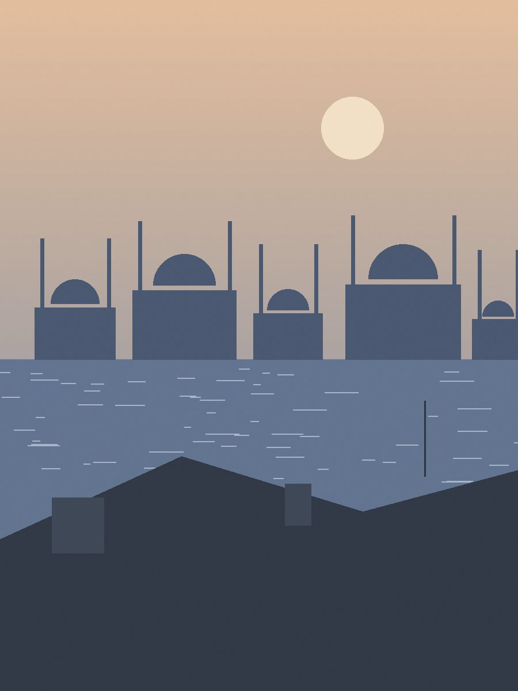
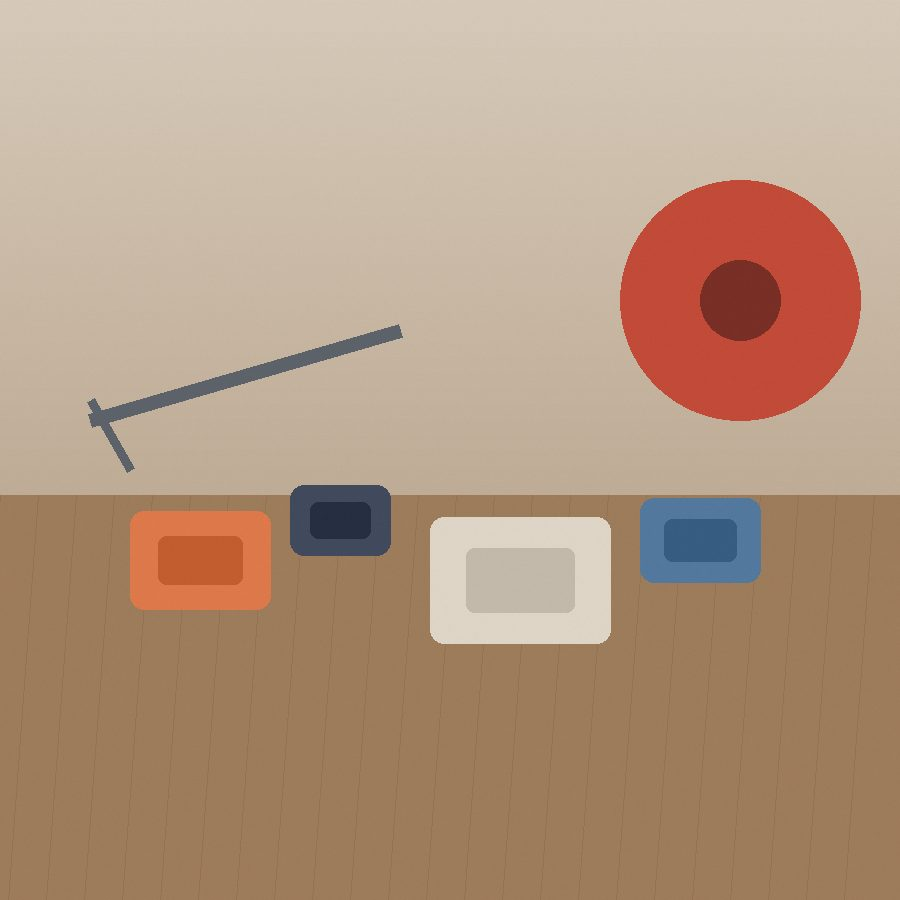
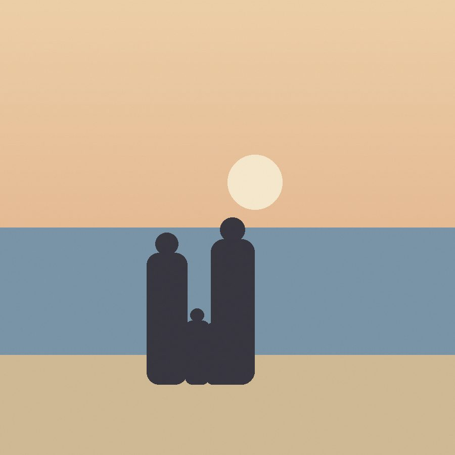

Technical Architect, Istanbul
A personal space for the systems I design, the things I build, and the life I want to remember.
This is where I post instead of social media: short notes, trips, the house, the printer, the gear, and the occasional long piece on architecture.



Illustrative case study
Rebuilding order orchestration for a multi-brand retailer
Context, boundaries, event contracts, migration trade-offs, and operational lessons.
Fintech, 2023 · Sample preview · Full entry coming later
A ledger service that regulators could audit without asking us
Append-only postings, deterministic replay, and a reporting read model rebuilt nightly.
Logistics, 2022 · Sample preview · Full entry coming later
Moving a courier platform off nightly batch into near real time
Change data capture from the legacy database, a thin streaming layer, and one strict rule: nobody writes to the old schema.
Along the way.
Things built, places visited, moments remembered.
Interface labels follow the language toggle. Sample entries stay in their original language, marked on each entry.
No entries found.
Try a different search or clear the filters.
End of the sample journal.